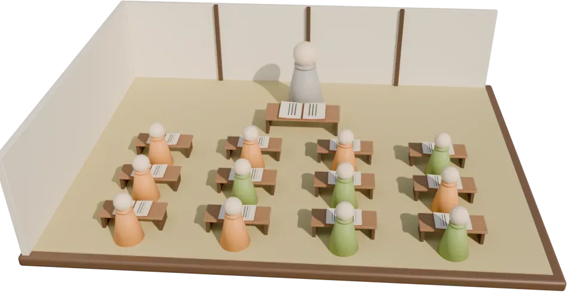
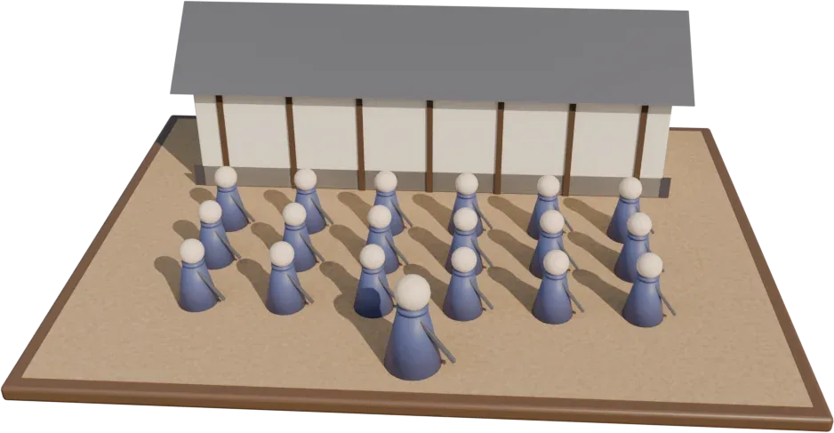
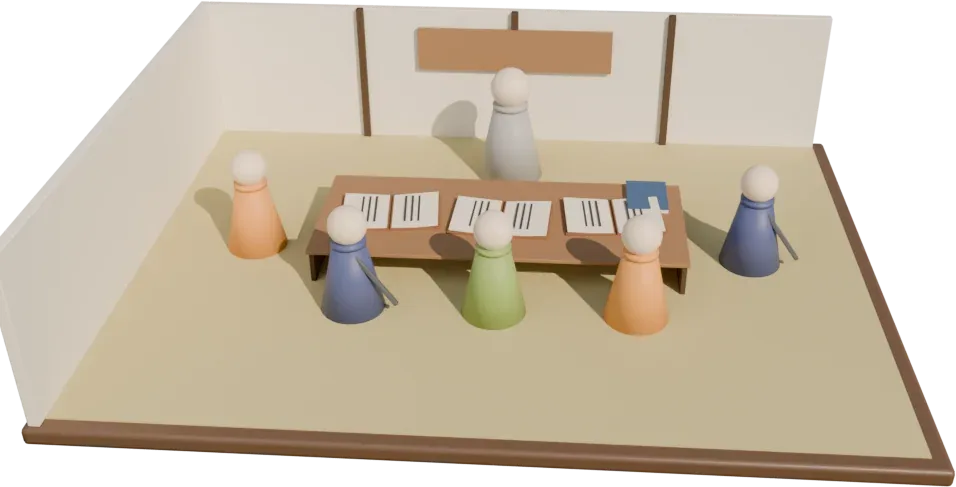

文字の大きさ
第5時人々と学問、新しい時代への動き／まとめる
つかむ調べるまとめる
教科書 p.164〜166
学習問題江戸時代には、どのような文化や学問が生まれたのだろう。
この時間のめあて江戸時代の人々の学びと世の中の変化を調べ、学習問題の答えをまとめよう。
この時間のポイント
1学ぶ場所



教科書で確かめようp.164 資料ア・イ
2だれが、何を学んだ？
幕府は、身分にふさわしい行いがあるという考え方に立った儒学を重んじました。
教科書で確かめようp.164 本文
3新しい時代への動き
百姓一揆と打ちこわしの件数がどう変わったかは、グラフで確かめましょう。
教科書で確かめようp.165 資料ウ
4単元のまとめ
江戸時代の文化の「中心となった人々」と「内容・作品」を書きこみ、平安・室町とくらべましょう。江戸時代の文化や学問の特徴を、短い文で表してみましょう。
教科書で確かめようp.166
考えてみよう
- 江戸時代には、どのような教育が行われていたのだろう。
- 江戸時代には、どのような文化や学問が生まれたのだろう。
- 縄文
- 弥生
- 古墳
- 飛鳥
- 奈良
- 平安
- 鎌倉
- 室町
- 安土桃山
- 江戸
- 明治
- 大正
- 昭和
- 平成
- 令和